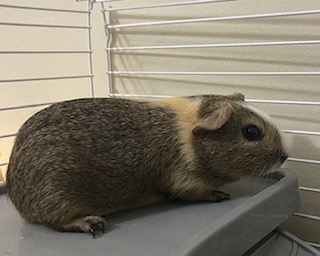
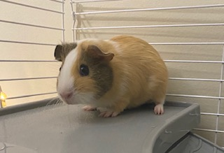
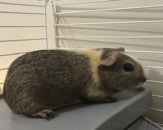
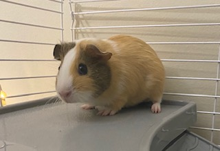

Tips
- It may take some time for a guinea pig to get used to their owner and their new surroundings. Don't force them out and give them some time and eventually they won't hesitate to be around you.
- Guinea pigs wheek when they hear their owners come by. They probaby know that you are there to give them a treat. This is what it sounds like:
- Click here to see an article on the different types of Guinea pig sounds and what they mean.
- Guinea Pigs need hay 24/7.
- You can give a variety of fruits and vegetables to your guinea pigs as treats. Mine especially like apples.
- Apples
- Lettuce
- Watermelon
- Cucumbers
- Bell Peppers
Top 5 treats to give to your guinea pigs
Click the image below to see what other treats you can feed them.

These are my guinea pigs!


These are my guinea pigs!


I hope you found this useful in some way!
Back to the top.